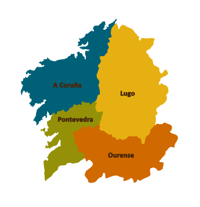

O tempo por provincias

O tempo por localidades
A coruña
Abegondo
Ames
Aranga
Ares
Arteixo
Lugo
Ourense
Pontevedra
O tempo na Coruña
El Tiempo. Consulte la predicción de la AEMET para Coruña, A
O tempo en Pontevedra
El Tiempo. Consulte la predicción de la AEMET para Pontevedra
O tempo en Lugo
El Tiempo. Consulte la predicción de la AEMET para Lugo
O tempo en Ourense
El Tiempo. Consulte la predicción de la AEMET para Ourense